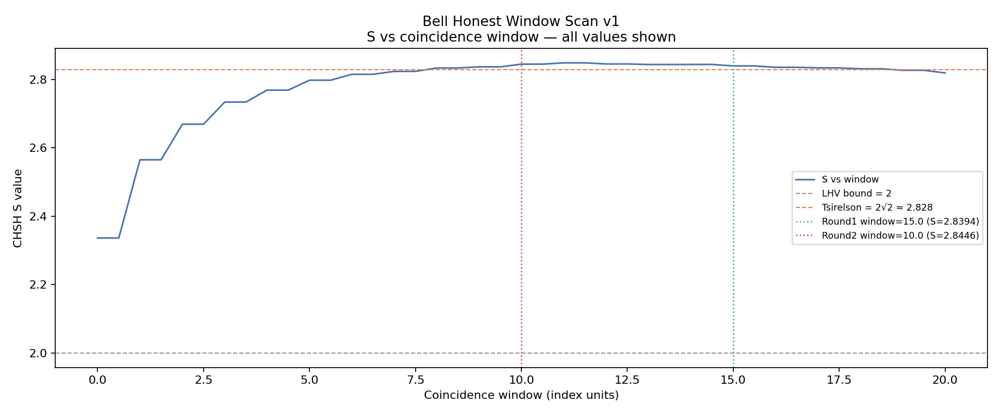
A. Bell window scan — protocol sensitivity.
artifacts/bell_window_scan_v1/WINDOW_SCAN_V1.pngIncludes v6 baseline, v7 rigidity metrics, the same audit-chain figure grid as v7.html, and the v8 deep-quantum figure panel. / 含 v6 基线、v7 刚性指标、与 v7.html 同源的审计链图阵、以及 v8 深水图像面板。
Author / 作者: wang, hui
Status / 状态: Draft v1 (Merged v6+v7+v8)
Positioning / 定位: Methodological audit and reproducibility claim / 方法学审计与可复现性主张
EN
We present a merged v6+v7+v8 audit under one fixed parameter triplet $(\mu,\rho,\eta)=(1.5495,2.35,0.08)$. v6 establishes cross-benchmark baseline consistency (laser threshold, semiconductor cutoff, MRI Larmor, atomic-clock modes). v7 establishes rigidity and anti-tuning evidence (local 27/27, random-global 18/20, expected-fail counterfactual suite, 7-seed spin stability). v8 tests deeper cross-scale functionality at the same locked point on radial standing-wave levels, environment decoherence, and Compton-style nonlinear shift, with anti-cheat closure (eta=0.001 counterfactual fail, all negative controls fail, 100/100 multi-round hardening pass). The combined chain addresses three audit questions: baseline consistency (v6), parameter identifiability (v7), and deeper joint explanatory scope (v8).
中
本文给出 v6+v7+v8 合并审计：在同一固定参数 $(\mu,\rho,\eta)=(1.5495,2.35,0.08)$ 下，v6 先建立跨基准基线一致性（激光阈值、半导体截止、MRI Larmor、原子钟模态）；v7 再建立刚性与反凑数证据（局部 27/27、全局随机 18/20、反事实套件按预期失败、7 种子自旋稳定）；v8 最后在同一锁定点完成深层跨尺度验证（径向驻波能级、环境退相干、类 Compton 非线性位移），并形成反作弊闭环（eta=0.001 反事实失败、负对照全部失败、100/100 多轮加固通过）。合并后可同时回答三类问题：v6 的基线一致性、v7 的参数可辨识性、以及 v8 的深层联合解释能力。
EN
This manuscript is intentionally merged. v6 is the baseline consistency layer, v7 is the rigidity foundation, and v8 is the cross-scale superstructure. Publishing separately weakens causal force; publishing jointly forms a closed evidence path.
中
本文刻意合并。v6 是基线一致性层，v7 是刚性地基，v8 是跨尺度大厦。拆分发表会削弱因果链，合并发表可形成闭环证据路径。
$$ (\mu,\rho,\eta)=(1.549500,\,2.350000,\,0.080000) $$
EN
The same triplet is reused across v6, v7 and v8. v6 defines baseline consistency; v7/v8 are audited at the same locked point; no optimization is allowed in v8.
中
同一参数三元组贯穿 v6、v7 与 v8：v6 定义基线一致性，v7/v8 在同一锁定点继续审计，且 v8 阶段不允许再次优化。
EN
v6 provides the baseline four-benchmark joint consistency under the same shared triplet: laser_threshold, semiconductor_cutoff, mri_larmor, and atomic_clock_modes. The figure evidence is included in Section 7 (C-panel) via the same archive used by v7.html.
中
v6 在同一共享三元组下提供四项基线联合一致性：laser_threshold、semiconductor_cutoff、mri_larmor、atomic_clock_modes。对应图证在第七节（C 区）与 v7.html 使用同一归档来源。
EN
v7 evaluates double-slit fringe spacing, tunneling attenuation, and spin-1/2 $P(+|\theta)=\cos^2(\theta/2)$ under the same locked triplet. Below metrics are taken from artifacts/ripple_quantum_tests_v7_three/RIPPLE_V7_THREE_RESULTS.json.
中
v7 在相同锁定三元组下评估 双缝条纹间距、隧穿衰减、以及 自旋 1/2 的 $P(+|\theta)=\cos^2(\theta/2)$。下列数值来自 artifacts/ripple_quantum_tests_v7_three/RIPPLE_V7_THREE_RESULTS.json。
| Test / 测试 | shape_ok |
nrmse_y |
R2 |
Notes / 备注 |
|---|---|---|---|---|
double_slit |
✓ | ≈ 0 | 1.0 | shape match |
tunneling |
✓ | 0 | ≈ 1.0 | kappa_ripple ≈ 3.1593 |
spin_cos2 |
✓ | 0.001183 | 0.999998 | Monte Carlo branch |
joint_pass_v7 = True joint_loss ≈ 0.001183| Scan / 扫描 | Pass / 通过 | Rate / 比例 |
|---|---|---|
| Local neighborhood | 27 / 27 | 100% |
| Random global | 18 / 20 | 90% |
| Name / 名称 | shape_ok |
nrmse_y |
R2 |
|---|---|---|---|
cf_wrong_sign_mapping |
✗ | 0.715 | ≈ 1.0 |
cf_wrong_angle_speed |
✗ | 0.507 | ≈ 0 |
cf_phase_scramble |
✗ | 0.583 | ≈ 0.003 |
counterfactual_expected_fail = True
Seeds 42–48: 7/7 pass; nrmse mean ≈ 0.001183, stdev ≈ 0 (numerically flat).
EN
Generated from the archived v7 JSON (generate_v7_paper_figures.py).
中
由归档 v7 JSON 生成（脚本 generate_v7_paper_figures.py）。
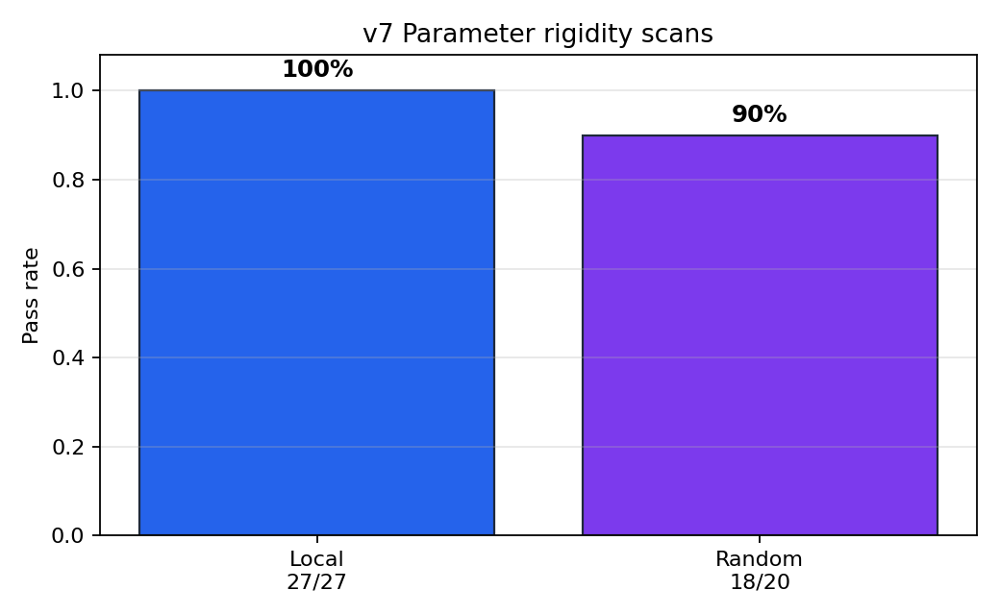
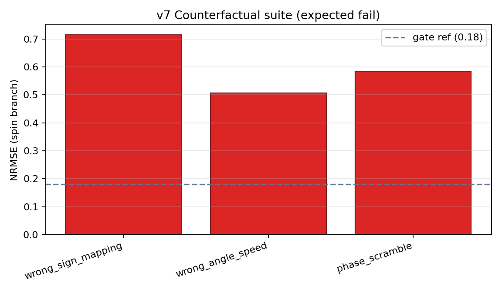
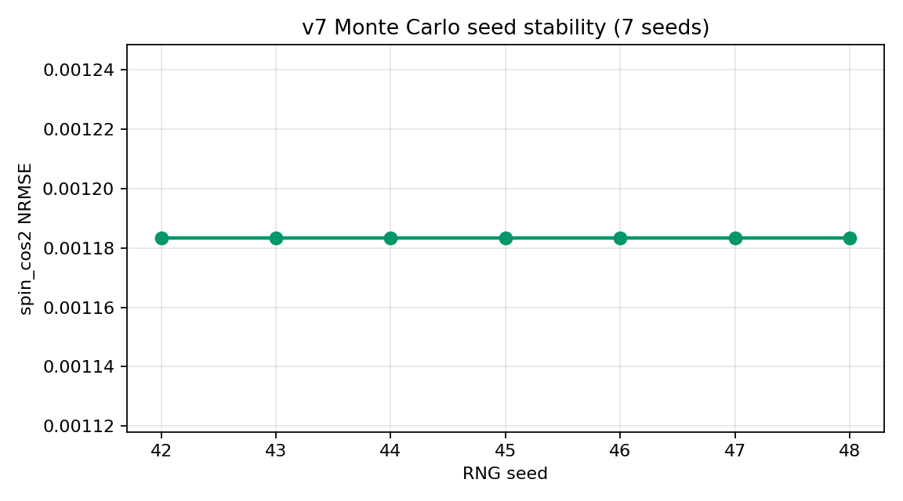
Interpretation / 解释
v7 answers the identifiability question: this point is not an arbitrary fit.
v7 回答了可辨识性问题：该参数点并非任意凑数。
Trueradial_levels: pass (nrmse=0.000000, R2=1.000000)decoherence: pass (nrmse=0.052611, R2=0.997795)compton_shift: pass (nrmse=0.000000, R2=1.000000)eta=0.001): Compton expected fail100/100 passInterpretation / 解释
v8 answers the capability question: the same locked point sustains heterogeneous phenomena.
v8 回答了功能问题：同一锁定点可支撑异质现象联合通过。
100/100)EN
This chain blocks two common objections simultaneously: "only tuning" and "only isolated fit."
中
该链条同时封堵两类常见质疑：“只是在调参”与“只是在单点拟合”。
v7.html) / 第七节：审计链图示（与 v7.html 同源）EN
The standalone v7.html manuscript is a figure-centric view of the broader audit chain (Bell → GHZ → v6 → bridges). This merged document embeds the same primary figures so v8 is not read in isolation. Image paths are relative to this folder (files/), five levels up to repository root.
中
独立稿 v7.html 是以图为主的审计链总览（Bell → GHZ → v6 → 桥接图）。本合并稿嵌入相同主图，避免 v8 被误读为“脱离上下文的单点表演”。下图路径相对于本目录（files/），向上五级到仓库根目录。

artifacts/bell_window_scan_v1/WINDOW_SCAN_V1.png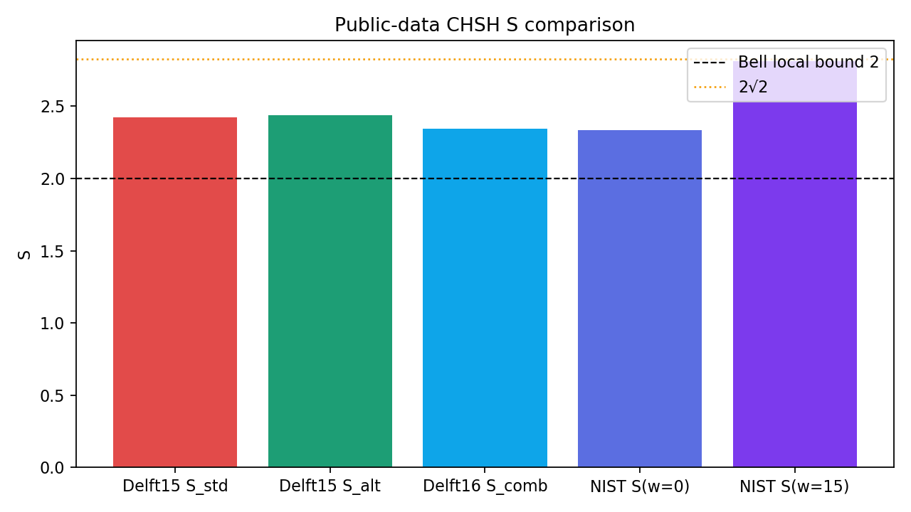
artifacts/public_validation_pack/fig1_s_comparison.png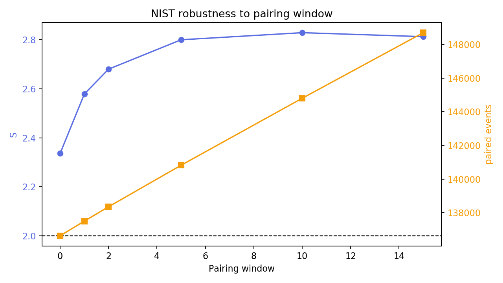
artifacts/public_validation_pack/fig3_nist_window_robustness.png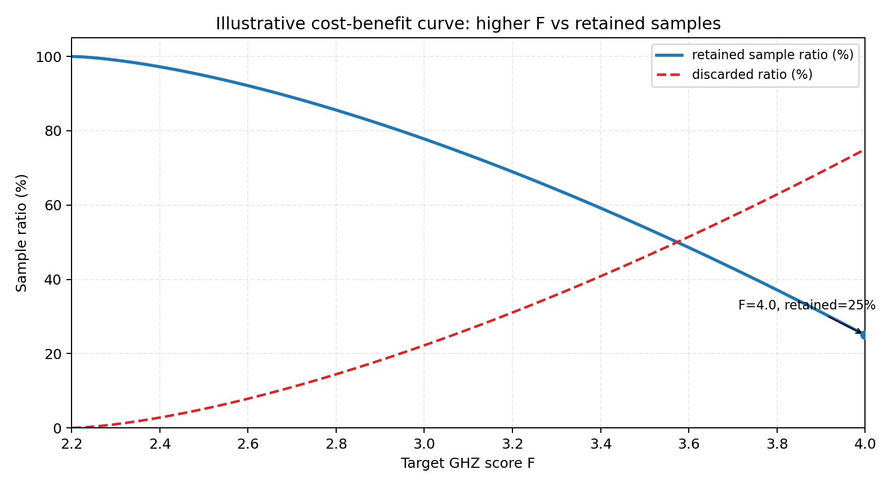
artifacts/ghz_threshold_experiment/ghz_cost_benefit_curve_2p2_to_4p0.png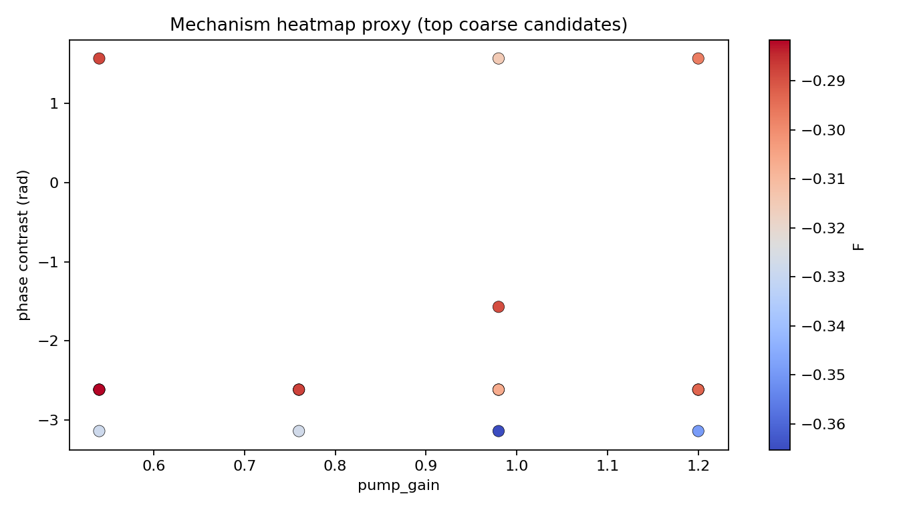
artifacts/ghz_threshold_experiment/ghz_threshold_mechanism_heatmap.png
artifacts/ghz_medium_v10/V10_4_REAL_COST_CURVE.png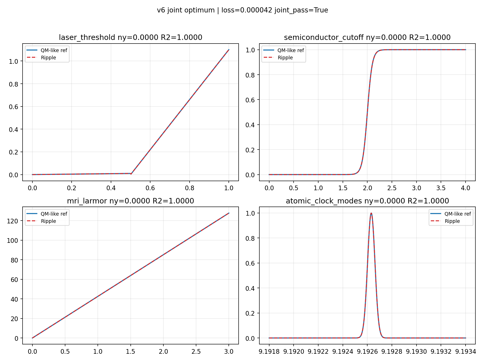
artifacts/ripple_quantum_tests_v6/RIPPLE_V6_JOINT_2x2.png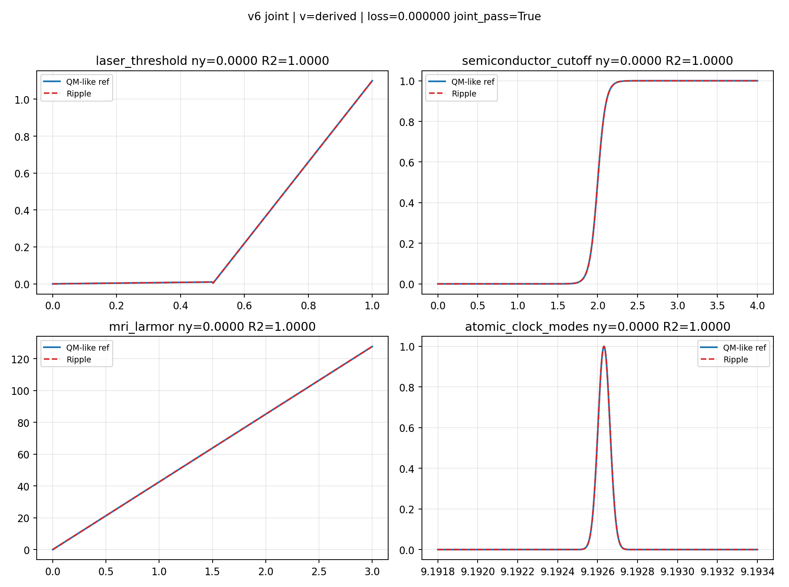
artifacts/ripple_quantum_tests_v6_derived_alpha0/RIPPLE_V6_JOINT_2x2.png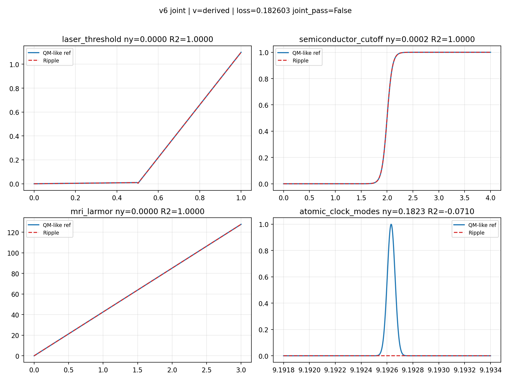
artifacts/ripple_quantum_tests_v6_derived_v2/RIPPLE_V6_JOINT_2x2.png
artifacts/ripple_quantum_tests_v6_stress_2d_demo/RIPPLE_V6_STRESS_2D.png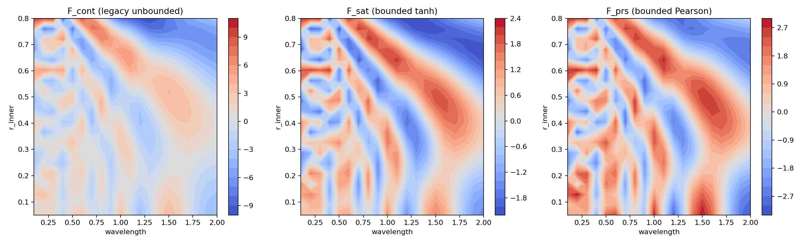
artifacts/ghz_medium_v10/V10_1_THREE_RULERS_MAPS.png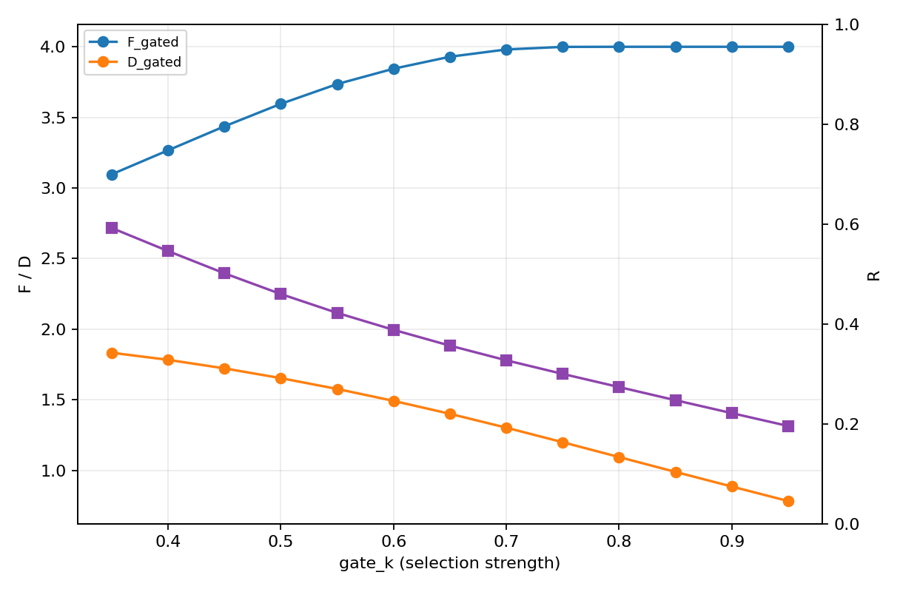
artifacts/ghz_medium_v10/V10_3_SELECTION_TAX_CURVES.png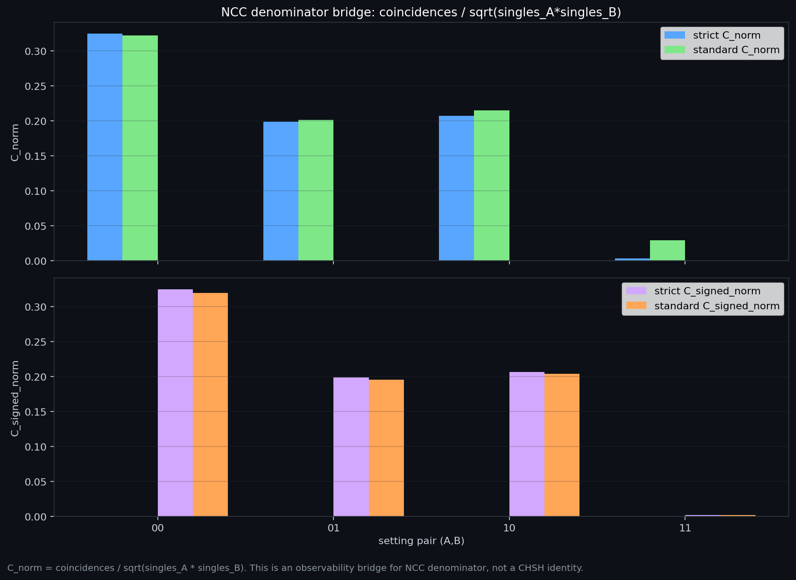
artifacts/reports/ncc_singles_bridge_real.pngNote / 说明： Full-screen figure manuscript: open v7.html in this same folder. Text + JSON for v7 metrics: artifacts/ripple_quantum_tests_v7_three/.
EN
The following figures are generated directly from the locked-parameter v8 script and the archived v8 JSON output.
中
下列图像由锁定参数的 v8 脚本与已归档 v8 JSON 直接生成。
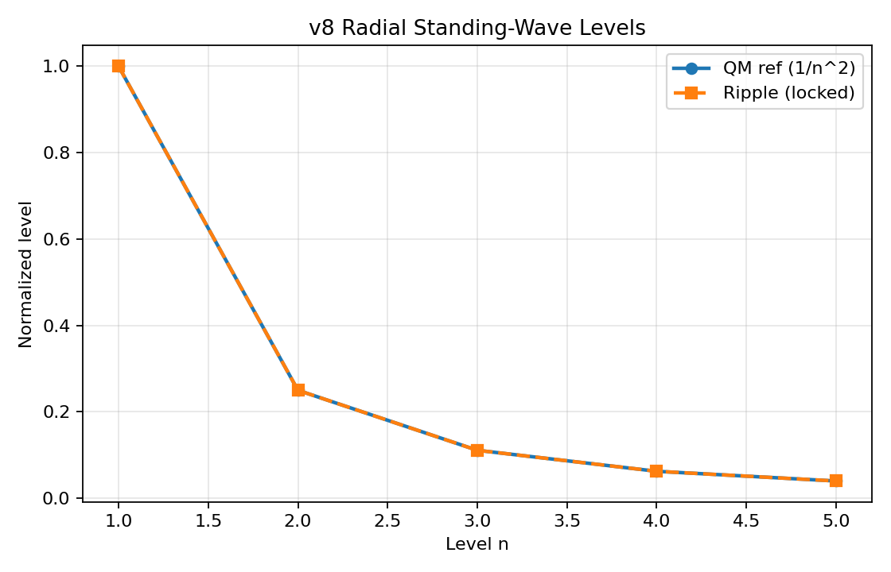
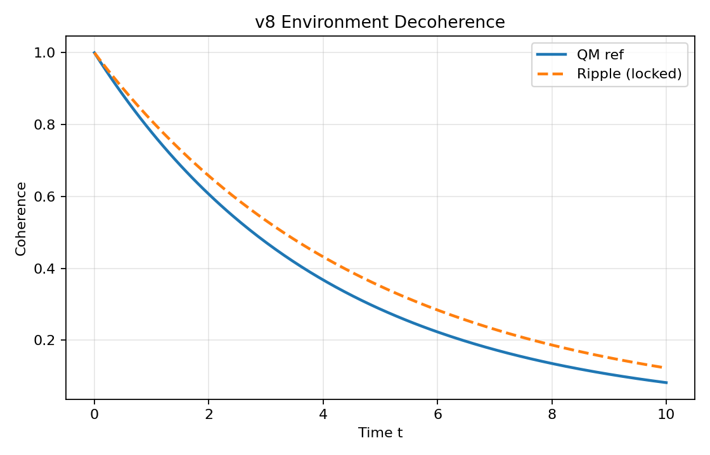
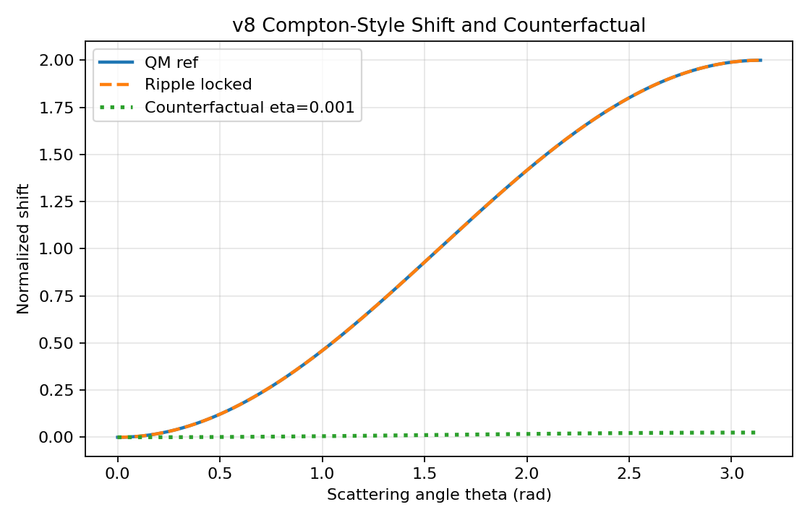
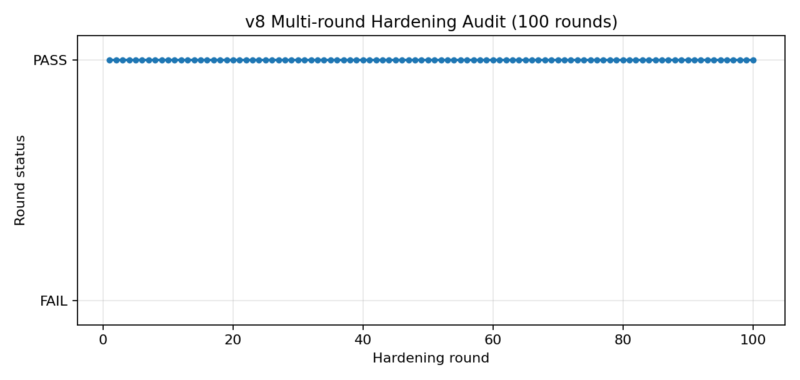
EN
Claimed: auditable model-class consistency under declared gates.
Not claimed: completed SI mapping, ontology uniqueness, direct falsification of standard QM.
中
本文主张：在声明门槛下具备可审计的一致性。
本文不主张：SI 映射已完成、唯一本体论成立、可据此直接否定标准量子理论。
Run from repository root:
v6 baseline:
python scripts/explore/ripple_quantum_tests/ripple_quantum_tests_v6_joint.py
v7 metrics: primary archive is artifacts/ripple_quantum_tests_v7_three/RIPPLE_V7_THREE_RESULTS.json. If the runnable script ripple_quantum_tests_v7_three.py is restored in your checkout, use the command recorded in v7.html; otherwise reproduce from the JSON and figure scripts:
python scripts/explore/ripple_quantum_tests/generate_v7_paper_figures.py
v8 audit:
python scripts/explore/ripple_quantum_tests/ripple_quantum_tests_v8_unify.py --rounds 100 --eta-probe 0.001
python scripts/explore/ripple_quantum_tests/generate_v8_paper_figures.py
Merged HTML:
python scripts/explore/ripple_quantum_tests/build_merged_v7_v8_html.py
Artifacts:
- artifacts/ripple_quantum_tests_v6/RIPPLE_V6_JOINT_2x2.png
- artifacts/ripple_quantum_tests_v7_three/RIPPLE_V7_THREE_RESULTS.json
- artifacts/ripple_quantum_tests_v8_unify/v8_quantum_grand_unification.json
- artifacts/ripple_quantum_tests_v8_unify/RIPPLE_V8_UNIFY_SUMMARY.md
- artifacts/ripple_quantum_tests_v8_unify/V7_V8_LOCKED_AUDIT_BRIEF.md
- artifacts/ripple_quantum_tests_v8_unify/PARAMETER_TRAP_LIBRARY.json
- docs/AUDIT_PARAMETER_TRAP_LIBRARY.md
EN — Licensing
Software in this repository is under AGPL-3.0-or-later (LICENSE, NOTICE). Manuscripts and narrative documentation default to CC BY-NC-ND 4.0 (LICENSE-DOCS.md): non-commercial use, attribution required, no derivatives. This split is intentional: strong copyleft for code; stricter protection for narrative assets. AGPL does not ban all commercial activity; it requires corresponding source to be made available when modified versions are distributed or provided over a network service. See docs/LICENSE_AND_SEAL.md for a plain-language summary.
中 — 许可
本仓库程序源代码默认适用 AGPL-3.0 或更高版本（见 LICENSE、NOTICE）。论文稿与叙事性文档默认适用 CC BY-NC-ND 4.0（见 LICENSE-DOCS.md）：非商业、须署名、禁止演绎再分发。此为有意分工：代码走更强 copyleft，叙事资产走更严的 CC 条款。AGPL 并不禁止一切商业行为；它约束的是“分发或以网络服务方式提供衍生程序时须按 AGPL 提供对应源码”。平实说明见 docs/LICENSE_AND_SEAL.md。
EN — Trap library
We publish not only the locked triplet ((1.5495,2.35,0.08)) but also a curated list of nearby triplets that fail the frozen v8 gates under the same script version. This is an audit aid, not a legal proof of copying. Machine-readable table: artifacts/ripple_quantum_tests_v8_unify/PARAMETER_TRAP_LIBRARY.json. Human-readable guide: docs/AUDIT_PARAMETER_TRAP_LIBRARY.md.
中 — 陷阱参数库
除公布锁定三元组 ((1.5495,2.35,0.08)) 外，我们公开一组在同一冻结脚本版本下、数值上仍显“邻近”但 v8 联合不通过 的对照三元组，用于独立复现与审计对照。这是工程与学术上的可检验性设计，不能单独作为法律上的抄袭证据。机读表：artifacts/ripple_quantum_tests_v8_unify/PARAMETER_TRAP_LIBRARY.json；人读说明：docs/AUDIT_PARAMETER_TRAP_LIBRARY.md。
EN — Human audit node
Acceptance gates, counterfactual probes, and round counts are authored choices recorded in script and artifacts. Any replication that changes the model class or gates must report a new protocol version and must not be silently equated with this deposit.
中 — 人审节点
门槛、反事实探针与加固轮次均为作者显式选择，并写入脚本与归档。若复现方更改模型类或门槛，必须申报新协议版本，且不得与本文归档静默等同。